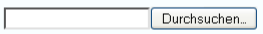

Import¶
Der Menüunterpunkt Import ermöglicht es allen Benutzer/innen des Systems, exportierte Studien zu importieren.
Wie importiere ich eine Studie¶
Wollen Sie eine Studie importieren, klicken Sie auf Durchsuchen und wählen Sie das zu importierende ecx-Archiv aus. Nach dem Klick auf Importieren gelangen Sie zur Ansicht Neuer Antrag. Sie sehen das ausgefüllte Formular, das noch bearbeitet und/oder eingereicht werden kann. Weitere Informationen dazu unter Neuer Antrag (Einreichung).
Warum habe ich keine Import-Funktion¶
Erst wenn Sie von der Ethikkommission als Benutzer/in bestätigt wurden, können Sie Studien importieren. Sie werden dafür von der Ethikkommission kontaktiert.